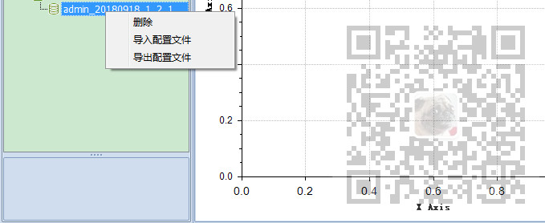

原文出处:本文由博客园博主霸道流氓提供。
原文连接:https://www.cnblogs.com/badaoliumangqizhi/p/11806490.html
原文连接:https://www.cnblogs.com/badaoliumangqizhi/p/11806490.html
场景
DevExpress的TreeList实现节点上添加自定义右键菜单并实现删除节点功能：
https://blog.csdn.net/BADAO_LIUMANG_QIZHI/article/details/102551175
在上面已经实现自定义右键菜单删除树节点，这里要实现自定义右键菜单实现
右键功能自定义，比如打开文件选择框。
注：
博客主页：
https://blog.csdn.net/badao_liumang_qizhi
关注公众号
霸道的程序猿
获取编程相关电子书、教程推送与免费下载。
实现
首先绑定treelist的鼠标单击事件
treeList.MouseClick -= treeList_MouseClick;
treeList.MouseClick += treeList_MouseClick;
然后在绑定的单击事件中
获取treelist，然后获取其数据源并转换为对象List，然后是相关的业务判断。
然后如果是鼠标右键的话，新增右键菜单项。
private static void treeList_MouseClick(object sender, System.Windows.Forms.MouseEventArgs e)
{
DevExpress.XtraTreeList.TreeList treeList = sender as DevExpress.XtraTreeList.TreeList;
if (treeList != null && treeList.Selection.Count == 1)
{
object idValue = null;
string strIdValue = String.Empty;
DataTreeNode nodeData = null;
List<DataTreeNode> datasource = treeList.DataSource as List<DataTreeNode>;
if (datasource != null)
{
idValue = treeList.Selection[0].GetValue("Id");
strIdValue = idValue.ToString();
nodeData = datasource.Where<DataTreeNode>(p => p.Id == strIdValue).FirstOrDefault<DataTreeNode>();
if (nodeData != null)
{
if (nodeData.NodeType == DataTreeNodeTypes.File)
{
treeList.OptionsSelection.EnableAppearanceFocusedRow = true; //启用整行选中
#region 右键弹出上下文菜单 - 删除数据文件
if (e.Button == System.Windows.Forms.MouseButtons.Right)
{
System.Windows.Forms.ContextMenu ctxMenu = new System.Windows.Forms.ContextMenu();
System.Windows.Forms.MenuItem mnuDelete = new System.Windows.Forms.MenuItem();
mnuDelete.Text = "删除";
mnuDelete.Click += delegate(object s, EventArgs ea) {
DialogResult dialogResult = DevExpress.XtraEditors.XtraMessageBox.Show(String.Format("确定要删除此实验数据吗[{0}]？\r\n删
除后无法恢复!", nodeData.Id), "霸道标题", System.Windows.Forms.MessageBoxButtons.YesNo, MessageBoxIcon.Question);
if (dialogResult == DialogResult.Yes)
{
try
{
string fileName = String.Empty;
#region 删除对应的树节点
DevExpress.XtraTreeList.Nodes.TreeListNode selectedNode = treeList.FindNodeByKeyID(nodeData.Id);
if (selectedNode != null)
{
selectedNode.ParentNode.Nodes.Remove(selectedNode);
}
#endregion
treeList.OptionsSelection.EnableAppearanceFocusedRow = false; //禁用整行选中
}
catch(Exception ex)
{
DevExpress.XtraEditors.XtraMessageBox.Show("删除实验数据异常:" + ex.Message, "霸道标题", MessageBoxButtons.OK,
MessageBoxIcon.Error);
}
}
};
ctxMenu.MenuItems.Add(mnuDelete);
#endregion
#region 右键弹出上下文菜单 - 导入配置文件
System.Windows.Forms.MenuItem mnuImport = new System.Windows.Forms.MenuItem();
mnuImport.Text = "导入配置文件";
mnuImport.Click += delegate(object s, EventArgs ea)
{
OpenFileDialog importOpenFileDialog = new OpenFileDialog();
importOpenFileDialog.ShowDialog();
};
ctxMenu.MenuItems.Add(mnuImport);
#endregion
#region 右键弹出上下文菜单 - 导出配置文件
System.Windows.Forms.MenuItem mnuExport = new System.Windows.Forms.MenuItem();
mnuExport.Text = "导出配置文件";
mnuExport.Click += delegate(object s, EventArgs ea)
{
DialogResult dialogResult = DevExpress.XtraEditors.XtraMessageBox.Show(String.Format("导出[{0}]成功!", nodeData.Id), "标题
", System.Windows.Forms.MessageBoxButtons.YesNo, MessageBoxIcon.Question);
};
ctxMenu.MenuItems.Add(mnuExport);
#endregion
ctxMenu.Show(treeList, new System.Drawing.Point(e.X, e.Y));
}
return;
}
}
}
treeList.OptionsSelection.EnableAppearanceFocusedRow = false; //禁用整行选中
}
}
效果

点击导入配置文件后